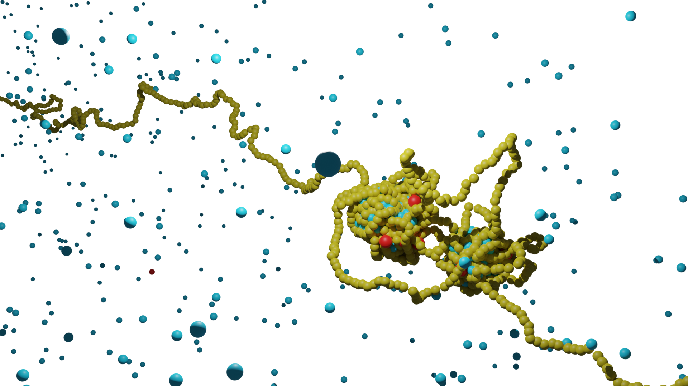

DNA, the remarkably long blueprint of life, undergoes compaction to fit within the limited space of a cell's nucleus. Recent discoveries reveal that this compaction is not just a passive arrangement. Instead, DNA is strategically organized to support critical cellular functions and precise gene regulation. Central to this organization is the "loop extrusion" mechanism, involving specific protein complexes known as Structural Maintenance of Chromosomes (SMC) proteins, particularly Cohesin and Condensin. These proteins do more than just compact DNA; they actively form loops that are crucial for bringing genes and their regulatory elements into close proximity, thus enhancing their interaction and effectiveness. Correct loop formation is vital, as any irregularities can lead to various diseases, including cancer.
DNA forms condensate in conjunction with transcription-related proteins. Increasing evidence suggests that these condensates, from liquid-liquid phase separation, are essential in transcription regulation. The recent discoveries of both loop extrusion and DNA-protein co-condensation are pivotal in understanding DNA organization and the transcriptional mechanism.
The mechanism of loop extrusion and its consequences remains an active area of investigation. My ongoing research focuses on the loop extrusion process by SMC molecules and their interaction with protein-DNA co-condensates.